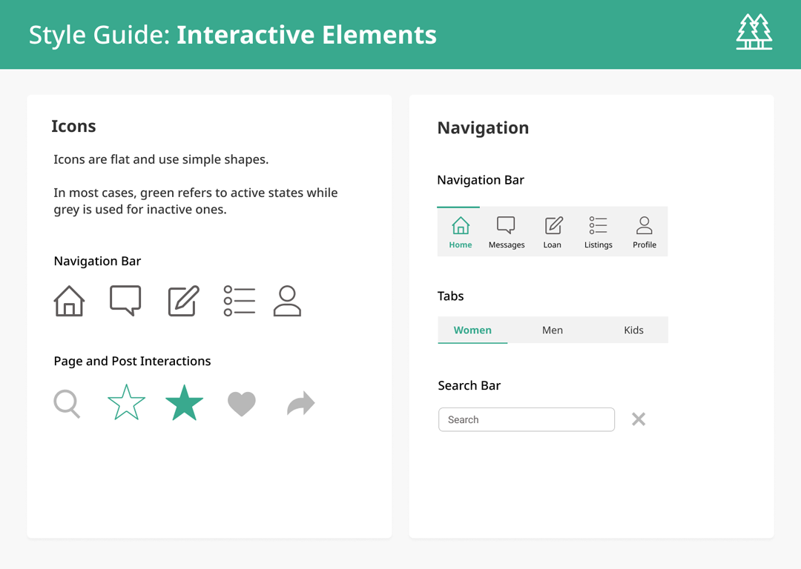
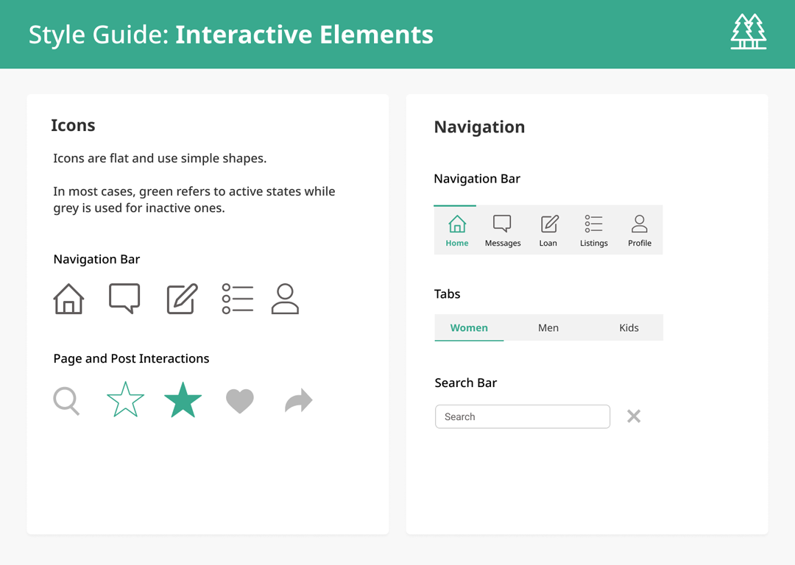

Persona Development
Based on the interviews and observation, we developed two personas to represent the two types of users for our app.
Note: At this earlier stage, we were considering a mix of buying/renting before we decided to focus solely on rentals.


Experience Mapping
We also created experience maps for each user group to further evaluate scenarios and how they may use the app:

Wireframes
After defining core features, wireflows were created to determine layout, hierarchy, and interaction paths. For inspiration, we referred to similar existing apps like LetGo, Airbnb, Turo, and Poshmark.
Here are some examples of a few key screens:

Style Guide
A style guide was also developed to determine the app’s visual elements. The overall look is clean and minimal in order to let the images of equipment listings stand out. Green and blue accents were chosen based on elements from nature.
This style guide was applied to our mockups and later, an interactive prototype.

 


Testing and Refinement
Usability Testing
After creating an interactive prototype, we gave ten participants’ four tasks to complete in the app and asked to rate them based on speed and accuracy.
Here are the average scores from an online survey:

A/B Testing
We also conducted A/B Testing to determine visual design options such as the app colours, button styles, and form input styles for certain screens. Here are some of the results: